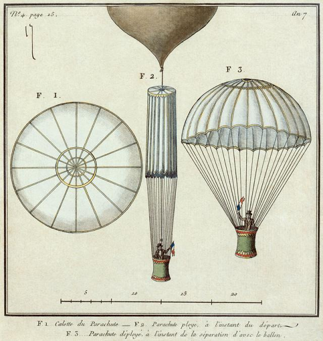

Le 22 octobre 1797, André-Jacques Garnerin (28 ans) effectue le premier saut en parachute au-dessus du parc Monceau (Paris), devant une foule de badauds.
L'aérostatier a l'idée du parachute et en 1797 ose l'exploit :
Depuis le parc Monceau, à Paris, il s'envola devant une foule à la fois admirative de son courage, mais craintive pour sa vie. Une fois arrivé à environ 700 mètres d'altitude, André-Jacques Garnerin actionna un mécanisme afin de séparer le ballon de la corbeille à laquelle il était rattaché. Le ballon explosa, les spectateurs furent stupéfaits. André-Jacques Garnerin entreprit alors la descente dans les airs au moyen de la voilure de son parachute. Il arrive au sol sain et presque sauf, avec une entorse à la cheville. En 1799, c'est au tour de sa femme de tenter et réussir l'exploit ! Le 11 octobre 1802, elle dépose le brevet du parachute au nom de son mari, après que celui-ci a amélioré la stabilité de son engin.

source: herodote